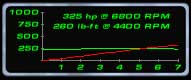

Step 11: Fixing the Performance
Remember all the problems you had in the last step? In here, you can fix them.
First, I found the torque curve to be weird, so I took it and raised the torque peak.
That's better, don't you think?

I also noticed the drag coefficient to be a little high for this car, so that came down too.
Then, I took it for a test drive, and discovered the engine mass to be too high (slow revving!)
I got everything the way I wanted it.
Matt has a wealth of suggestions for getting your
car almost exactly like it is in real life. SO here's Matt.
1. Use the dragstrip and back the car up all the way to
the beginning. Drive the car all the way down the strip and when the car reset
complete the lap and press <Esc> & <End race>. You now have the cars exact
topspeed. Change the rolling resistance to tune the cars topspeed. Note: Don't
forget to use full springs, no toe-in or spoilers (if any) and that cars with
low torque/power rpm peak might be faster with lower gearing!
2. Run the car down the strip again trying to accelerate as fast as possible
from 0-200 kph, when you reach 200 kph try holding it there or preferable a
little over 200 kph then try to deaccelerate as fast as possible (200-0 kph).
You can now use the replay/analasys/speed to check the cars acceleration/deacceleration.
Simply use the fast forward button to scroll forward until you see the speed
change from 0 to 1 mph. Read the timer (for me it always reads 4.8 seconds so I
don't have to check this time every time). Momorize this number (or write it
down on a piece of paper) and scroll to let's say 62 mph. Now read the timer
(let's say it says 8.8 seconds). You're car does 0-62 mph (100 kph) in
8.8-4.8=4.0 seconds! Easy huh? You can keep scrolling to what ever speed you
like; 100 mph (160 kph), 125 mph (200 kph) etc. Now scroll to the very moment
you start deaccelerate. On the way down when the speed hit 200 kph (125 mph)
read the timer (let's say it reads 15.0 seconds). Memorize this number or write
it down on a piece of paper. Now scroll forward until the speed says 0 kph and
look at the timer (let's say it says 20.3). You car deaccelerates from 200-0 in
only 20.3-15.0=5.3 seconds!
You can adjust the acceleration and deacceleration in many diffrent ways, with
transmission inertia and variouse of settings in the .tir-files etc. Weight also
affects the acceleration figures a whole lot. Personally I prefer tuning a car
so that it matches it's real life counterpart instead of just using real life
values and hope that the game engine will create the perfect car for you (it
will never happen!)
3. You need to test the car around a track you know the car's real life
counterpart can finish in a certain time. You can also compare the topspeeds if
you have access to all of this. Most often it is very hard to find information
about things like this.
4. Test the cars re-grip by sliding it a little bit throughout some corners
during diffrent speeds. A more powerful re-grip will be achieved by making the
diffrence in tire grip front/rear bigger. If you know how to tune .tir-files you
can adjust the speed of lateral movement and a whole lot of things. I you want
alot of control you should try raising the inertias to let's say
50000/60000/20000 and change the cp_height to maybe 35.0. This will make it
possible to powerslide the car like crazy. Using these settings together with
really low grip (needs to be set in the .tir files) and you're close to building
a really cool rally-car. Remember that a heavy rear end will make the rear brake
out easier but also make the car harder to control during high speed... Don't
make the car too heavy at the rear or it will be too hard to powerslide it. You
can make sure the cp_height is not too far off normal by driving the car really
fast and the spin it arounf by putting in the reverse. If the cp_height is too
high the air underneith will lift the car up in the air and if it is too low the
car will roll over. Higher cp_hight means more control and higher cp_long means
more general understeer... don't go too high on that one either (I personally
use 45 compared to the original vipers 51)
5. Do some dougnuts and "jump" over some curbs in some tight corners to make
sure the car doesn't flip over. This will happen with certain settings in the .tir-files
and/or if the car is too light.
I could go on and on about performance editing... there's simply so much more
info than we can ever put in a turtorial. Only by changing the .tir-files you
can do all of this...
Change the overall tire friction.
Set how much energy that will be lost into the body/chassis of the car instead
of pushing it forward and that way alter the cars performance in the mid-range
speed.
Set how much the rear-axle torque of the car will affect the grip.
Set how much and how easily the car will slide sideways before the tires
re-grip.
Set the tire rubber harder or softer which will affect the "control" and "snap"
Set how much the chassis will respond to tire grip for example doing wheelies
etc.
Change the tire air pressure which affects how much grip will be lost because of
bumps on the road or when you brake.
Change how much skids the tires will leave because of bumps on the road.
Change the longitudal grip.
Change the speed and range of lateral movement when grip is lost.
...but in case I come to think of anything else that is essentional to changing
a cars performance I will post here. Unfortunally I have promised some of the
more important persons in the VR community not to say too much about the .tir-files
at this time so I will have to post a more exhaustive turtorial for that at
another time. For more info on performance-editing send me your questions at
matt@vrgt.com
If the torque-curve is too flat or not flat
enough:
1. Raising the maximum torque amount will lower the amount of torque at low
rpm's and give you a more pointed torque curve.
2. Lowering the maximum torque amount will raise the amount of torque at low
rpm's and give you a more flat torque curve.
3. Raising the torque peak rpm will lower the amount of torque at low rpm's and
give you a more pointed torque curve.
4. Lowering the torque peak rpm will raise the amount of torque at low rpm's and
give you a more flat torque curve.
5. Lowering the power peak rpm will raise the amount of torque at low rpm's and
give you a more flat torque curve.
6. Raising the power peak rpm will lower the amount of torque at low rpm's and
give you a more pointed torque curve.
7. Lowering the maximum power output will lower the amount of torque at low
rpm's and give you a more pointed torque curve.
8. Raising the maximum power output will raise the amount of torque at low rpm's
and give you a more flat torque curve.
Please note that cars with a very low power/torque output will tend to get flat
power/torque curves no matter what you do.
It is also possible to tune these power/torque curves so that you will
experience something like a turbo kicking in at a certain rpm. However the
effect will be quite powerful and resemble that of a dirtbike (I had a Kawasaki
KX 80 as a kid) but also force the power output higher than the value you've
used in the .cf-file. Maybe I could explain how to do this another time.
The car revs too fast or not fast enough:
Try this formula for the engine inertia: max. torque (lb-ft) / 36. If this
doesn't work try raising or lowering the value a little bit until you get the
result you are looking for. A car with higher torque/power will need a higher
engine inertia or it will rev too fast and the other way around. Please note
that cars with low engine inertia, very low torque at low rpm but loads of power
at high rpm will rev really slow at low rpm but really fast at high rpm.
P.S. If the torque/power curves seem really screwed up the diffrence between the
maximum power and torque is too big or not big enough - - or - - the diffrence
between the torque and power peak rpm is too big or not big enough. Setting the
power peak rpm lower than 5252 can also screw things up. I have created many
diffrent calculators but none of them has been good enough in my opinion so I
have never shown them to anyone, but here's one of them if you would like to try
it out:
http://www.vrgt.com/torque.xls
(right-click and choose "save target as") P.P.S.
Once you are happy with your performance, you can move ONWARD.